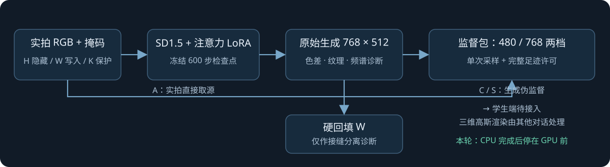
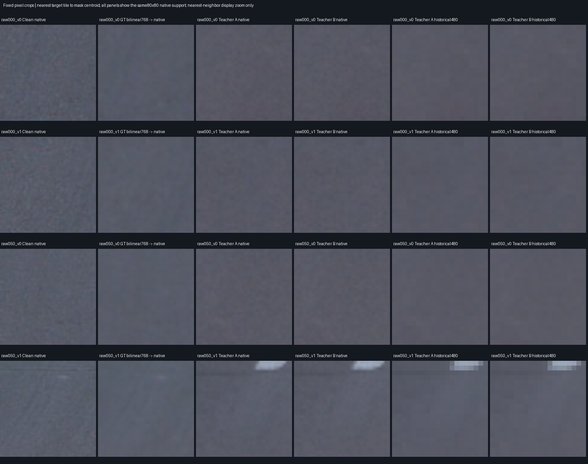
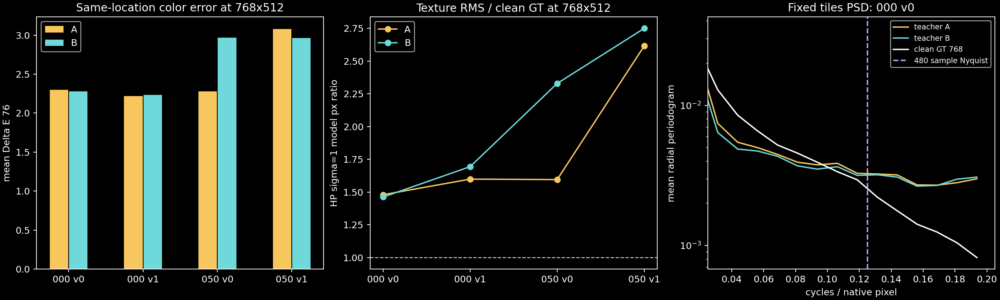
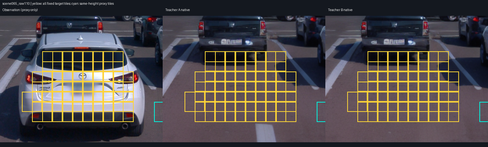

WORLDSIM · 2026-11-19 · CPU 诊断
教师失真与监督采样损失，需要分别处理
二维教师链路确有责任：原图尺度的细颗粒已丢失，色调与纹理频谱也存在失真。但在 768 模型尺度，教师高频能量并非普遍不足；部分伪纹理反而过强。当前应同时处理有效生成分辨率、材质真实性与监督带宽，不能只靠锐化、加噪或增加训练步数。
CPU 诊断与输入准备完成GPU 推理 0训练更新 0三维渲染修改 0GPU 画质与显存尚未验收

责任划分
教师原始生成：已有失真
使用无损原始解码，与同位置干净道路对照。色调与纹理频谱在硬回填前已经偏离，属于二维教师链路；扩散网络、VAE 与输入处理的具体责任仍待 GPU 控制分离。模型尺度高频能量并非普遍不足，伪线条也会抬高统计。
教师 → 学生：有额外损失
实际链路是 768×512 → 双线性 1920×1280（uint8）→ 4×4 均值 480×320。放大不能恢复纹理，之后的面积平均会继续去除高频。
黑色接缝：单独问题
历史 W 硬回填会保留许可边缘的原图黑圈。已有审计显示，学生孔洞监督的合法完整足迹内，raw 与回填目标差为零。接缝不能解释全部学生颗粒缺失。
三维投影：本轮不判断
高斯足迹和水平细纹由其他对话处理。此报告只诊断二维源与采样，不将二维包的 CPU 验证表述为三维画质改善。
固定规则下的测量
4 个合成遮挡任务来自 081 街段两个时刻，使用独立 clean RGB 与道路证书；它们是已用过的诊断集，不是盲测。真实 065 车下没有真值。纹理比较排除许可边界与明显结构边缘，高频能量不等同于真实颗粒。

同一固定图块：原始干净道路、仅缩放控制、教师 A/B、历史 480 监督。显示只用最近邻放大；050 v1 中的白线为生成结构，未按输出挑掉。
4 个合成任务的同位置色差、同尺度纹理 RMS 和频谱。A/B 是旧输入遮罩对照，不是新模型；4 任务只来自两个底图。
真实 raw110：黄色为生成区固定图块，青色为同高度可见道路代理。相邻道路仅提供材质参照，车下道路没有独立真值。
四个假设的证据
1 · 区域大，上下文少：局部支持
当前 B 输入整图隐藏占比约 6.87%–12.27%，训练中位数约 34.65%，不能以全图比例认定超出训练。raw110 到声明可见道路的最远距离约 105.5 模型像素，训练中最大约 79；raw86 约 70。训练与查询的掩膜语义不同，此距离仅是上下文支持代理。
2 · 分辨率不足：明确瓶颈
1920 原图缩到 768 后，每个模型像素跨 2.5 个原图像素；原图约 5 像素以下周期超出其采样带宽。VAE 又以 8 倍空间压缩运行，但解码器仍能合成像素纹理，不能把 8 倍压缩当作硬性的纹理截止频率。提高分辨率须由固定对照验证。
3 · 注意力 LoRA 不擅长纹理：尚未证实
当前 rank-4 只训练注意力投影；这能限制适配自由度，但并不证明无法生成颗粒。历史 600 步在注意力上追加局部卷积 LoRA 的对照，未优于注意力版本；暂不直接切换结构。
4 · 训练步数不足：尚未证实
实际为 600 次单样本更新、68 个训练样本，每例约 8–9 次。训练只在伪孔洞区域计算噪声预测 MSE，没有显式颜色或纹理损失。200/400 步检查点保留，但无配对评价曲线；先分离分辨率、视野、LoRA 与 VAE，再决定是否续训。
训练是原图下方 [0,600,1920,1280] 裁片缩为 768×272，推理整帧为 768×512。两者原图倍率相同；改变的是视野、上下文、latent 高度和输入重采样方式，不能写成道路像素尺度错配。
已准备的改进入口
- 监督保留原生教师。 新包提供 768 与 480 两档；A 从实拍直接取源，C/S 从原始生成取源。RGB 单次面积采样，来源域按全部非零滤波支持保守准入；K 任意相交即剔除。原始来源许可保留，不能因为是生成图就自动授予高频材质许可。
- 先做冻结教师的 48 次推理上限对照。 6 个固定任务 × 2 个 seed（101/202）× 4 组：整帧 768 的 T0、整帧 768 无 LoRA、训练视野 768×272 的 T0、整帧 1152×768 的 T0。prompt、DDIM20、CFG3、eta0 固定，不改 W/K；CPU 检查 6 例 W 均完整落在固定裁片内。
- 单列 VAE 控制。 同尺度合法实拍做 latent mode 的 encode/decode，与重采样参考比较；仅进入独立 VAE 控制。实际推理的条件 latent 使用 sample，mode 控制不等价于完整扩散链路。
- 评价同时看颜色、频谱和结构。 评分入口报告合成核心 RGB/Lab 与同尺度多频段纹理能量偏差；边界与标线通过原生 PNG 并列复核，不由高频分数自动选优。两 seed、逐 case 保留回退；真实隐藏道路没有真值，两帧真实任务只量化合法可见道路的保持情况。
不同画幅的计算量不同，同一数字 seed 也不代表逐像素相同噪声；两 seed 只作稳健性诊断。单次面积采样只能减少重复滤波损失，不能恢复 480 网格已丢失的带宽。768 监督仍是待接入的二维接口，不含高分辨率三维相机、覆盖或 alpha 的验收结果。
CPU 验证与执行边界
远端工作目录：/root/autodl-tmp/drivingeditor_repro/campaign/road_2d_teacher_hf_cpu_20261119_r1。GPU 入口需要显式 --execute-gpu；没有后台队列。当前无卡实例保持开机。
这里完成的是 CPU 诊断与 GPU 前准备。真实 GPU 模型加载、历史重放一致性、高分辨率显存和图像质量尚未验证。后续若训练预计约一小时及以上，先做约十分钟真实 smoke，覆盖保存、评价、完整恢复与下一阶段入口；CPU 单测不能替代。
证据与复现文件
源码提交与远端取回状态见交付凭据。
实现依据与来源
旧报告和附件仅作为证据；当前执行范围来自本次用户请求。历史结果和其他对话的三维实验目录均未替换。